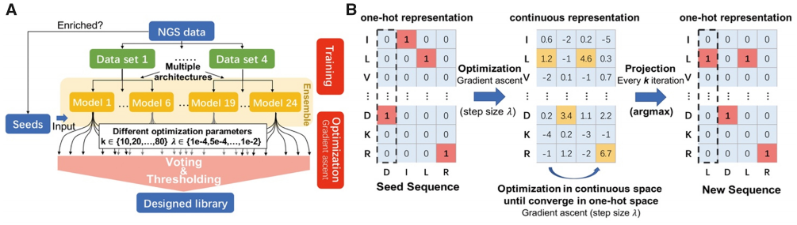
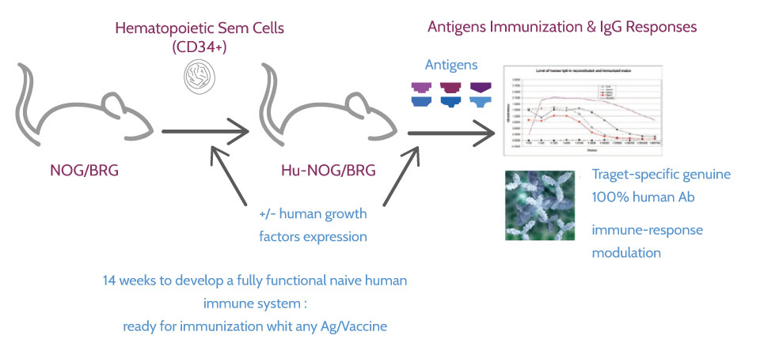
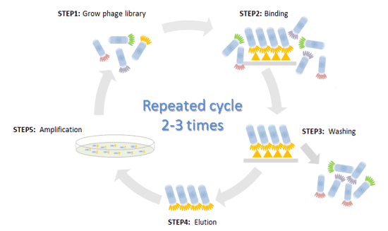
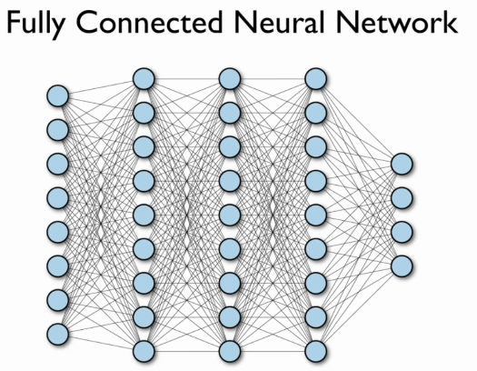
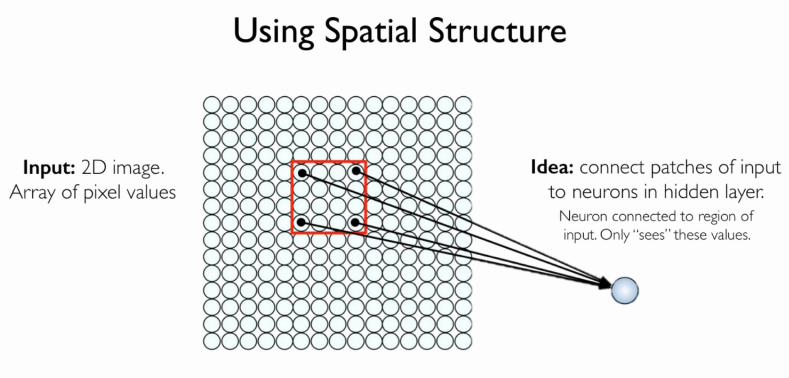

Antibody complementarity determining region design using high-capacity machine learning
Bioinformatics, Volume 36, Issue 7, 1 April 2020

Presentation by Matheus Cardoso
Overview
Motivação
Criar um modelo que apresente:
Anticorpos com efeito preciso (sem efeitos colaterais);
Modelo baseado em seleção aleatória (phage-display) que permita correlação entre sequência do anticorpo e propriedades desejadas.
Resultados
Criação de anticorpos com afinidade superior à candidatos propostos por técnica de phage-display.
Demostração de que modelos computacionais podem ser usados para aumentar especificidade de anticorpos de uma maneira modular.
Entendendo o problema
Possíveis métodos para seleção de anticorpos:
- in vivo;
- in vitro;
- in silico.
in vivo

in vitro

Prós
- Descoberta de anticorpos sem necessitar da estrutura molecular do alvo
Contras
- São métodos empíricos;
- Relativamente demorados e caros;
- Não permitem sucessiva otimização dos anticorpos.
in silico
Prós
- Econômico;
- Rápido;
- Permite abordagem modular;
- Permite futura otimização dos anticorpos.
Por que mais um modelo computacional?
Modelos atuais:
- Necessitam da estrutura molecular Alvo;
- Baseiam-se em minimizar energia livre da interação Anticorpo-Alvo (não necessariamente implica em alta afinidade com o Alvo).
Ens_Grad
Como a rede neural do Ens_Grad opera?
Rede Neural Simples

Rede Neural Convolucional


Mas por que estamos analisando imagens?
Estamos preocupados com Anticorpos, não imagens!
One Hot Encoding

Gerando novas sequências a partir de seeds
Otimização por Gradient Ascent
Pergunta 1
Um modelo computacional consegue prever se anticorpos nunca antes vistos serão enriquecidos em um processo de seleção por afinidade?
Treinando o Ens_Grad com o Ranibizumab
Pergunta 2
Um modelo computacional consegue selecionar anticorpos que tenham afinidade por apenas uma molécula alvo?
Treinando o Ens_Grad com Trastuzumab Etanercept e Bevacizumab
Pergunta 3
Um modelo computacional consegue criar anticorpos que tenham maior afinidade pela molécula alvo do que aqueles que foram propostos por experimentos de phage-display?
Discussão Final
Conclusões do Artigo
Modelos Computacionais são efetivos modelar novos anticorpos;
Modelos Computacionais são efetivos para otimizar anticorpos;
Modelos Computacionais são efetivos para filtrar anticorpos com afinidade desejada.